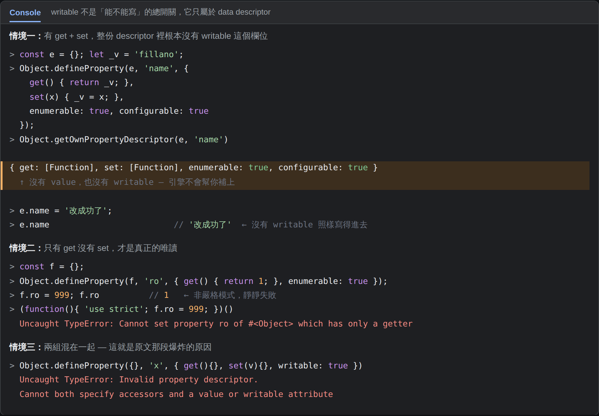
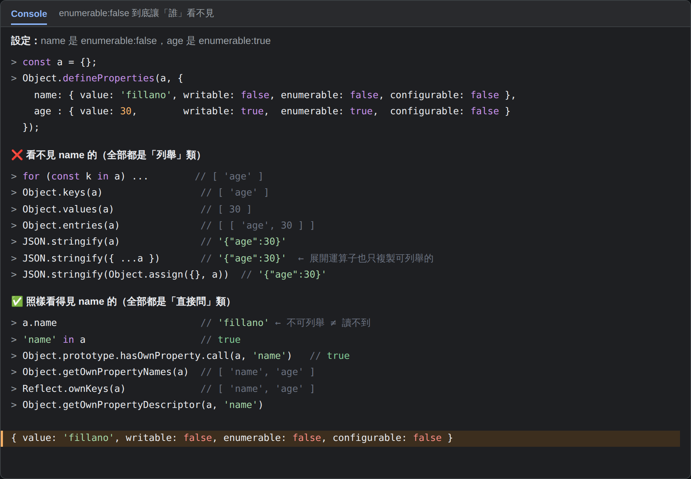
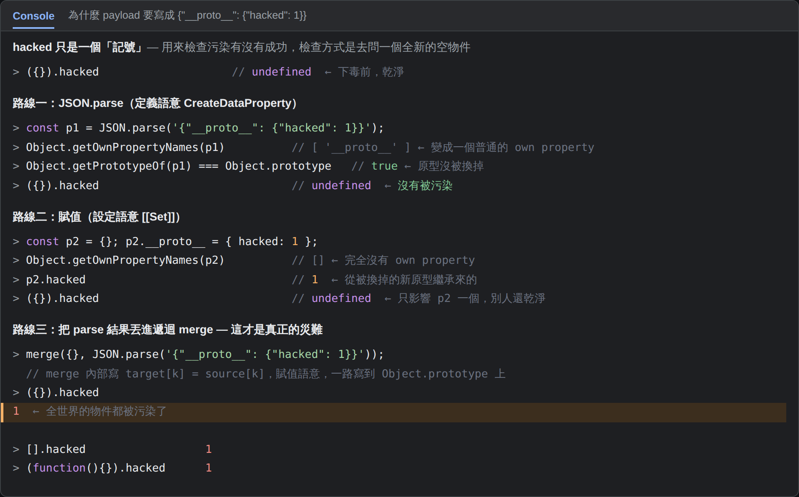

var a = {};
Object.defineProperties(a, {
'name': { value:'fillano', writable:false, enumerable:false, configurable:false },
'age' : { value:30, writable:true, enumerable:true, configurable:false }
});fillano 是作者自己的名字，這是 fillano 的 ES5 介紹文（約 2011 年）裡自己寫的範例。
但它示範的語法在 MDN 上有明確對應的章節。
| 原文在講的事 | MDN 對應章節 |
|---|---|
Object.defineProperties(obj, {...}) 這個方法 |
Object.defineProperties() |
| 四個欄位的意思與預設值 | Object.defineProperty() → Description |
| Data 與 Accessor descriptor 互斥 | Object.defineProperty() → Description |
原文下一段那種 get／set 寫法 |
Working with objects → Defining getters and setters |
| 哪些操作看得到不可列舉屬性 | Enumerability and ownership of properties |
"A data descriptor is a property with a value that may or may not be writable. An accessor descriptor is a property described by a getter-setter pair of functions. A descriptor must be one of these two flavors; it cannot be both."
—— MDN, Object.defineProperty() → Description
value 跟 writable → 這叫
？？？，屬性背後就是一格死的值。get 跟 set → 那個才叫
？？？，屬性背後是一對函式。所以分類方向是對的（這確實是物件相關的筆記），但精確地說： 主題是 property descriptor，getter/setter 只是它的其中一種形態。
「writable: true 代表可以覆寫，拿掉是寫成 writable: false 還是完全不寫？
拿掉也很奇怪啊，你要可以寫才能 get 或 set 吧？」
答案：完全不寫。而且「不寫」不等於「寫成 false」。
不是「預設 false」，是這個欄位不存在。實測印出來只有四個欄位：
const e = {}; let _v = 'fillano';
Object.defineProperty(e, 'name', {
get() { return _v; }, set(x) { _v = x; },
enumerable: true, configurable: true
});
Object.getOwnPropertyDescriptor(e, 'name')
// { get: [Function], set: [Function], enumerable: true, configurable: true }
// ↑ 沒有 value，也沒有 writablee.name = '改成功了';
e.name // '改成功了' ← 沒有 writable 照樣寫得進去const f = {};
Object.defineProperty(f, 'ro', { get() { return 1; }, enumerable: true });
f.ro = 999; f.ro // 1 ← 非嚴格模式，靜靜失敗
(function(){ 'use strict'; f.ro = 999; })()
// TypeError: Cannot set property ro of #<Object> which has only a getter| 你想表達的意思 | data descriptor 用 | accessor descriptor 用 |
|---|---|---|
| 這個屬性存什麼 | value | get 函式的回傳值 |
| 能不能被寫 | writable: true / false | 有沒有給 set 函式 |
所以「你要可以寫才能 get 或 set」這個推論，是把兩套機制混在一起了。
writable 管的是 data 屬性的賦值，set 管的是 accessor 屬性的賦值，
它們是兩條平行的路，不是一個在管另一個。

| 欄位 | 哪一組 | 意思 | 字面值 {} | defineProperty 沒寫時 |
|---|---|---|---|---|
value | Data | 值本身 | 你給的值 | undefined |
writable | Data | 能不能用賦值改值 | true | false |
get | Accessor | 讀取時呼叫的函式 | 無 | undefined |
set | Accessor | 寫入時呼叫的函式 | 無 | undefined |
enumerable | 共用 | 能不能被列舉 | true | false |
configurable | 共用 | 能不能刪除或重設說明書 | true | false |
最容易踩的坑：Object.defineProperty(o, 'a', { value: 1 }) 建出來的屬性預設是
？？？，
而 o.a = 1 這種一般賦值建出來的三個開關？？？。
writable | configurable | 結果 |
|---|---|---|
| true | true | 完全正常的一般屬性 |
| true | false | 值可以改，但不能刪、不能改說明書 |
| false | true | 鎖不住 —— 還能用 defineProperty 重新給值繞過去 |
| false | false | 真正的常數屬性，改不了、刪不了、重設不了（原文 name 就是這格） |
// 原文的 a.name 四種攻擊全部失敗
a.name = '改掉'; // 非嚴格：靜默失敗
(function(){ 'use strict'; a.name = '改掉'; })() // TypeError: Cannot assign to read only property
delete a.name; // 沒用
Object.defineProperty(a, 'name', { value:'X' }); // TypeError: Cannot redefine property: name
a.name // 'fillano' ← 永遠是它「enumerable: false 代表 for...in、Object.keys()、JSON.stringify() 對它沒有作用」——
方向對，但措辭要修：不是那些方法對它沒作用，而是那些方法根本看不到它。
它還在物件上好端端地，只是不參與列舉。

| ❌ 看不見（列舉類） | 結果 | ✅ 看得見（直接問類） | 結果 |
|---|---|---|---|
for...in | ['age'] | a.name | 'fillano' |
Object.keys(a) | ['age'] | 'name' in a | true |
Object.values(a) | [30] | Object.hasOwn(a,'name') | true |
Object.entries(a) | [['age',30]] | Object.getOwnPropertyNames(a) | ['name','age'] |
JSON.stringify(a) | {"age":30} | Reflect.ownKeys(a) | ['name','age'] |
{ ...a } | {age:30} | getOwnPropertyDescriptor | 完整說明書 |
Object.assign({}, a) | {age:30} |
所以 enumerable: false 是「隱藏」不是「保護」。 真正的機密不該進到這個物件裡。
function Parent(){}
Parent.prototype.inherited = 1;
const c = new Parent(); c.own = 2;
for (const k in c) ... // ['own', 'inherited'] ← 走上原型鏈了
Object.keys(c) // ['own'] ← 只看 own這也解釋了為什麼老教科書會叫你在 for...in 裡加
？？？。
own property（自有屬性）＝這一格是刻在這個物件身上的，不是從
？？？繼承來的。
const proto = { fromProto: 'A' };
const d = Object.create(proto); // d 的原型是 proto
d.normal = 'B';
d.fromProto // 'A' ← 讀得到
Object.hasOwn(d, 'fromProto') // false ← 但不是 d 的 own property
Object.hasOwn(d, 'normal') // true三個條件一起擋掉誰的實測：
const proto = { fromProto: 'A' };
const d = Object.create(proto); // ① 不是 own
d.normal = 'B'; // 全部通過
Object.defineProperty(d, 'hidden', { value:'C', enumerable:false }); // ② 不可列舉
d[Symbol('sym')] = 'D'; // ③ 不是字串鍵
JSON.stringify(d) // {"normal":"B"} ← 只剩一個活下來賦值語意 obj.k = v | 定義語意 Object.defineProperty | |
|---|---|---|
| 內部方法 | [[Set]] | [[DefineOwnProperty]] |
| 會不會先找原型鏈上的 setter | 會 | 不會 |
| 產生的 descriptor | 三個開關全 true | 沒寫的一律 false |
遇到 writable:false | 失敗（嚴格模式丟錯） | 看 configurable 決定 |
obj.__proto__ = x | 觸發原型 setter，換掉原型 | 建立一個叫 __proto__ 的普通屬性 |

hacked 只是一個記號，檢查方式是去問一個全新的空物件 ({}).hacked{"__proto__": {"hacked": 1}}hacked 這個名字沒有意義，它只是一個記號，用來檢查污染有沒有成功 ——
檢查方式是去問一個全新的空物件有沒有長出這個屬性。
JSON.parse 之後 → ({}).hacked 是 undefined，沒被污染。p.__proto__ = { hacked: 1 } 之後 → 只有 p 自己的原型被換掉，({}).hacked 還是 undefined。({}).hacked === 1、[].hacked === 1，
？？？。這才是災難。enumerable 那一格是 JSON.stringify 的第二道篩選閘門。JSON.stringify(new Map(...)) 才會得到 {}。writable:false，第二層 Object.freeze 等於把所有屬性的 writable 與 configurable 一起關掉。